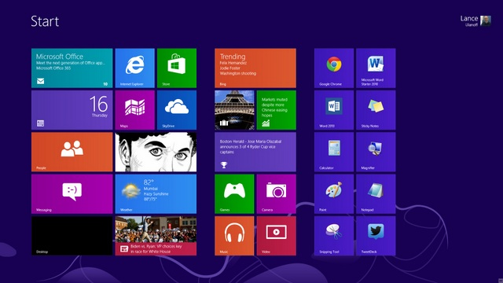
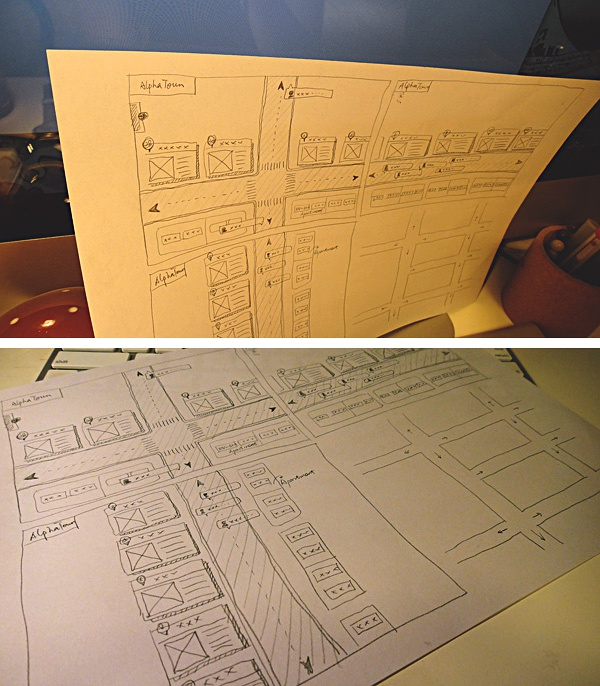

这个想法在我会点技术前就萌生了, 以至于有些惊奇当时的点子现在如何如何
后来我用文本多次描述过,比如旧的博客上, 或者更早的笔记上
最开始很清晰, 网页上的部件是独立的, 这是所有人都能一致地理解的
那么一个拖拽的动作对应元素被摘取, 就像剪报, 或者剪葡萄. 首先效果是可行的
借助此类功能, 可以重新排列网页上的内容, 并保存在本地做其他使用
这放在 Windows8 的开始菜单上就好懂了, 一个导航栏需要能重排的
之后, 我可以从每个网页上取下不同的片段, 放到一起拼凑成为一张页面
结果那段时间我着迷叫做Widget的技术, 用在网页上提供漂亮的挂件, 并自动更新
而现在桌面甚至移动平台都很流行这种挂件了, 当时就是这么喜欢

相对来说, 现在的挂件和我想的不同在于, 我需要进行嵌套
在网页中, 嵌套是常见的, 只不过, 用 HTML 写出来效果并不好, 或者说 CSS
我这里用了-webkit-box这个私有属性, 此外flexbox依然在演进
在 Chrome 以外浏览器或者时间长了错乱了也在预料之中. 总之能这样布局
name
age
loves
more about info
so, this it a Demo
难点在于,HTML 当初可不是那么设计的, 如果我想写, 几乎要重复一边所有细节
如果在一门编程语言里遇到有相同的代码要重复多遍, 恐怕不需要犹豫, 用函数
因此后端的模板引擎总有办法对付这个问题, 比如Jade提供的Include和Mixin
而且实时上我的代码尝试这样生成了, 重复的代码用一个函数重复调用
那么借助 Jade 和Slim, HTML 编写过程中的嵌套和代码复用基本可行了
在 MVC 模式的服务端中, 网页就是通过模板的嵌套和组合来完成渲染的
那么我想更具体地, 提供一些更细节的 URL 来允许网页的局部能被请求和加载
单纯请求的实现是简单的, 只要定义相应 GET 请求的pathname能返回 HTML 即可
比如下面的例子, 对单独的 DIV 组件给出路径, 每个部分能被单独请求
name
age
loves
more about info
so, this it a Demo
那么/info.html之下的 DIV 我就不罗列了, 可以在Express里写出来
另外实用的还有浏览器端 MVC 框架和浏览器端模板引擎的方案, 但这里不考虑
当服务器肯给出局部的页面, 自然会考虑在浏览器端进行拼装, 形成网页
name
age
loves
more about info
so, this it a Demo
这就需要有相应技术在网页内嵌入网页, 而不只是 HTML 网页再渲染到 DIV
同时编写页面的语法中, 就隐含了将代码本身作为引入代码的框架结构
比如<iframe>就能嵌入网页. 再者, 其中也应该有 JS 环境在运行
所以我想: 每个嵌入的网页都是 Object, 对外暴露接口, 内部含有私有数据
另外可增加一些选项让网页能更多样的功能:
- 内嵌页面可以知道自己的层级和大小, 以便隐藏更一些深层的网页
- 页面可以循环包含, 在显示时默认不会展开全部层级页面
- 有进入子页面, 返回上级页面, 跳转相应页面等选项
上面几点细节出来之前, 发生的一件事情是豆瓣的阿尔法城开始了测试
随着时间我越发感到网络该是城市, 是世界, 而不是用来生产搜索推荐结果的机器
我发现阿尔法城缺少一种嵌套的自由, 于是结合之前所想开始想象嵌套
试想, 你进入城市, 到街道, 到大厦, 到楼层, 到房间, 而在网上有着无限的维度
曾经人们需要用链接打开一个个页面才能展开新的空间看新的事物
而我的模型通向更多样的方位, 可以想象等人机交互更成熟, 其中如何导航
另外每个页面是一个单独的环境让 JS 运行, 我觉得模块化上就更清晰了
当然, 这种情况下需要更多跨页面通信的技术, 我想还是超乎现实的
也许, 我说也许, 可以有新的语言跳过 HTML/CSS/JS , 尝试去看别样的一个未来
关于维护多个并行的环境并相互传递参数的架构我还没接触到, 大概是并行
总之我觉得那是一个不错的未来, 每个标签作为对象.. 期待吧